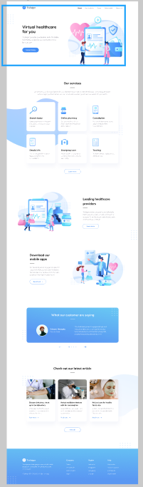

<!DOCTYPE html><html lang="en"><head><meta charset="UTF-8"><meta http-equiv="X-UA-Compatible" content="IE=edge"><meta name="viewport" content="width=device-width, initial-scale=1.0"></head></html><link rel="stylesheet" href="https://cdnjs.cloudflare.com/ajax/libs/animate.css/4.1.1/animate.min.css" /><link rel="stylesheet" href="css/style.css"><title>Моя работа</title><body> <header class="header"><div class="container"> <strong class="logo">FRONTEND </strong><nav class="header__nav" id="menu"><a class="mobile-nav_close" href="#close">«</a><ul> <li> <a href="index.html">Главная</a></li><li> <a href="about.html">Обо мне</a></li><li> <a href="work.html">Работы</a></li><li> <a href="contact.html">Контакты</a></li></ul></nav><a class="mobile-nav_open" href="#menu">☰</a></div></header><hr><div class="block"><div class="block__descr"><p class="block__descr-text">Адаптивная вёрстка меняет дизайн страницы в зависимости от поведения пользователя, платформы, размера экрана и ориентации девайса и является неотъемлемой частью современной веб-разработки. Она позволяет существенно экономить и не отрисовывать новый дизайн для каждого разрешения, а менять размеры и расположение отдельных элементов.</p><h3 class="h3">Программа изучения во время проекта :</h3><ul> <li> jQuery библиотеки, Slick Slider</li><li> Сложный адаптив</li><li> Мобильное меню, Псевдокласс :target</li><li> Медиазапросы</li><li> Правильная структура файлов</li><li> Псевдоэлементы</li></ul></div><div class="block__item"> <a class="link" href="work/trafalgar/index.html">Просмотреть</a></div></div></body>